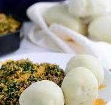

Pounded Yam

What is Pounded Yam?
Pounded yam is one of the many yam recipes in Nigeria. it is very delicious and also very popular. I like it best when it is served with egusi soup.
Nutritional profiles of Pounded yam include
Protein: 15 grams
Fat: 1 grams
Carbs: 45 grams
Fiber: 15 grams
Iron: 20% of the Daily Value (DV)
Calcium: 8% of the DV
Magnesium: 21% of the DV
Phosphorous: 25% of the DV
Potassium: 21% of the DV
Folate: 74% of the DV
Beans also contain decent amounts of zinc, copper, manganese, selenium, and vitamins B1, B6, E, and K
What you need to pound a yam
- Tubers of yam
- Mortar
- Pestle
- Cooking pot
- Salt to taste
Steps to Pound yam
- Peel off the brown outer layer of the yam, slice and wash the white part with lots of clean water
- cook for 10 - 15 minutes, then check if the yams are soft enough for pounding
- Pick a fork and transfer into a mortar, then Pound with a pestle. Pound until the yam s seedless and can easily be moulded. you can add water and pound until you have a smooth soft pounded yam
- Pounded Yam is served with Soups like Egusi...